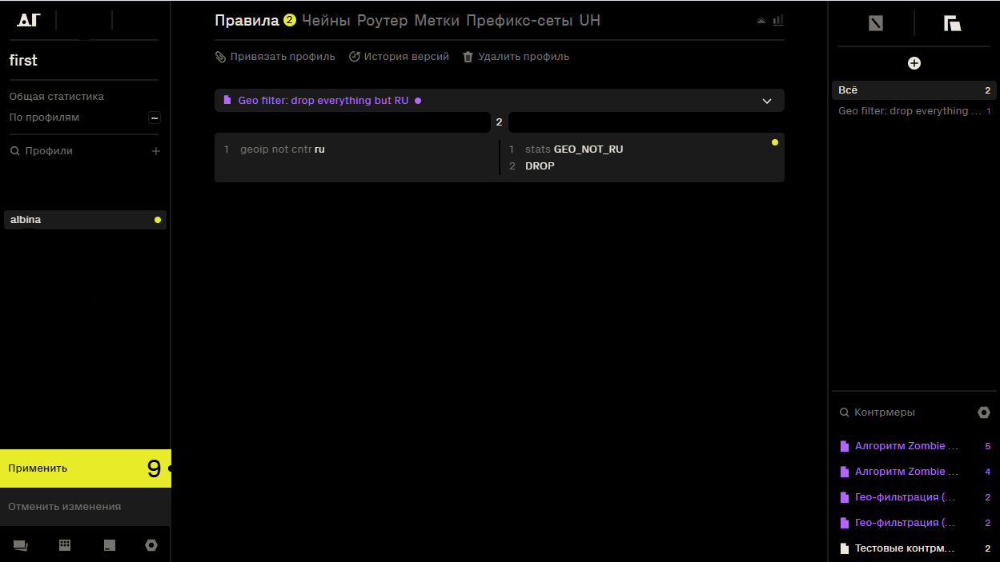
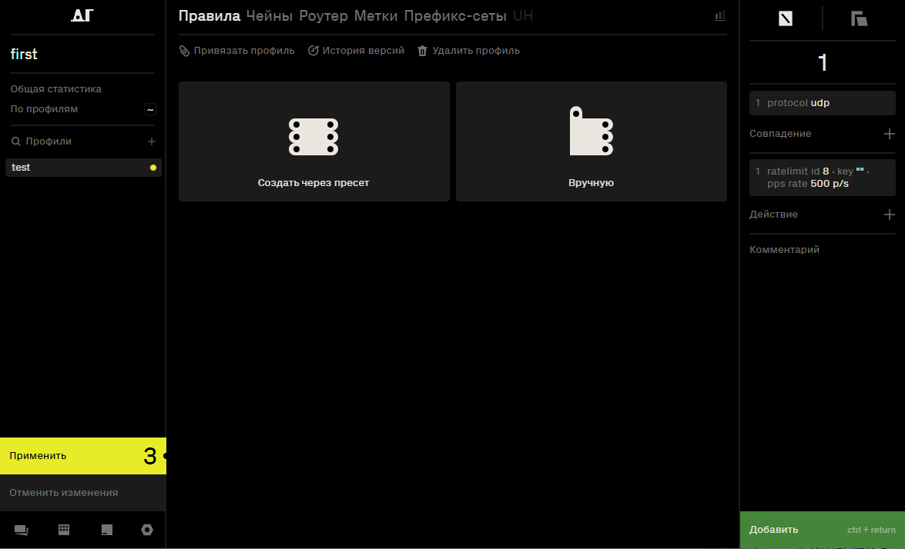
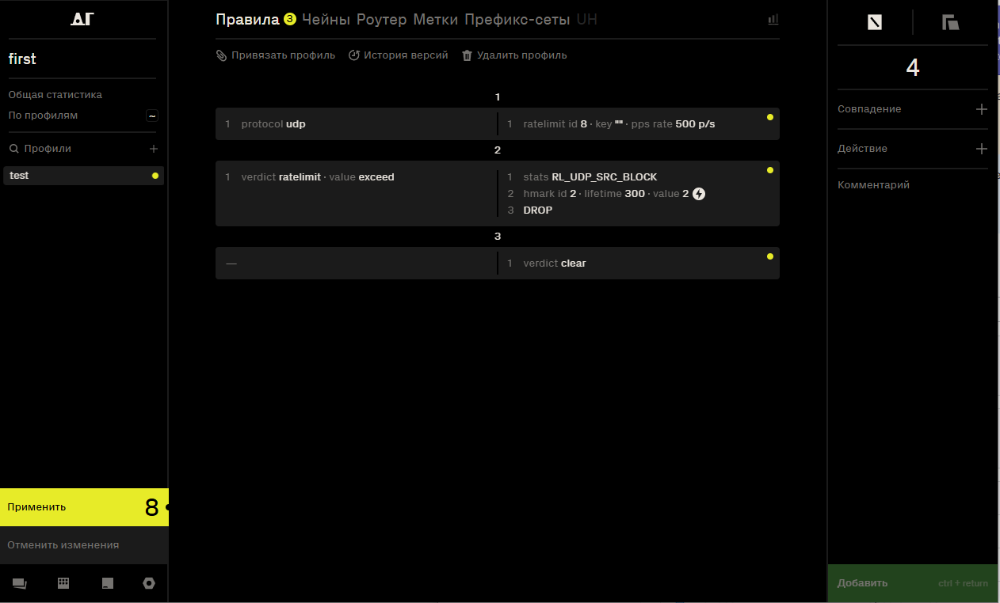
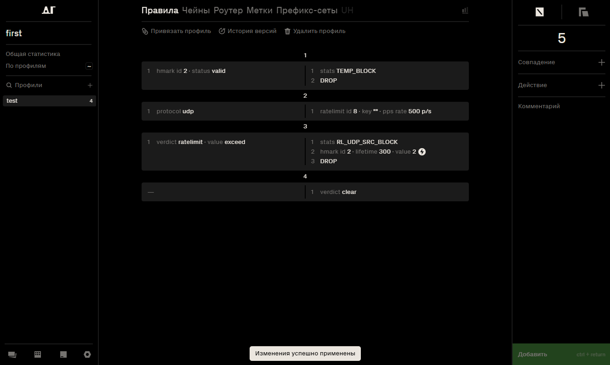

ПАНКИ ХОЙ
mkdocs new [dir-name]- Create a new project.mkdocs serve- Start the live-reloading docs server.mkdocs build- Build the documentation site.mkdocs -h- Print help message and exit.
Project layout
mkdocs.yml # The configuration file.
docs/
index.md # The documentation homepage.
... # Other markdown pages, images and other files.
Правила – алгоритм (инструкция) для обработки трафика.
Создание и редактирование правил
Правила могут быть заданы одним из двух способов: с использованием пресета или вручную.
Создание правила через пресет
- Перейти в необходимый профиль.
- Выбрать опцию Создать через пресет.
-
В правом нижнем углу отобразятся доступные контрмеры:
- Контрмеры отображаются фиолетовым цветом, если подключена база вредоносных сигнатур.
- Контрмеры отображаются белым цветом, если они были созданы вручную в разделе Пресеты.
-
Выбрать необходимую контрмеру и перетянуть в поле Правила.
- Для применения изменений необходимо нажать желтую кнопку Применить

Создание правила вручную
- Перейти в необходимый профиль.
- Выбрать опцию Вручную.
В DosGate правила создаются путем комбинирования совпадений и действий. Совпадения определяют условия, при которых правило срабатывает. Действия применяются к трафику, если условия совпадений выполнены. Такой процесс позволяет гибко настраивать фильтрацию и управление трафиком.
Примеры
Назначение правила: Ограничения доступа на основе географического происхождения IP-адреса. Весь трафик, не относящийся к России, будет отброшен.
-
В интерфейсе профиля нажать кнопку Вручную. Это откроет форму для настройки совпадений.
-
В поле Совпадение выбрать параметр geoip → country → RU.
-
Активировать радиокнопку NOT, чтобы применить логическое отрицание. Условие будет выполняться для всех IP-адресов, не принадлежащих РФ.
-
В поле Сверяем установить src, правило будет охватывать весь трафик, источник которого находится за пределами РФ. Нажать кнопку Добавить.
-
В поле Действие выбрать STATS — это позволяет записывать все срабатывания правила в отдельный счётчик. Ввести имя счётчика: GEO_NOT_RU, чтобы в дальнейшем можно было анализировать объём и частоту трафика, не относящегося к России. Нажать кнопку Добавить.
-
В поле Действие выберать DROP - это действие приведёт к немедленному отбрасыванию всех пакетов, соответствующих условию (т.е. всех, кто не из РФ). Пакеты будут сброшены без уведомления отправителя и без дальнейшей обработки.
-
При необходимости добавить комментарий к правилу. Это может быть пояснение или примечание для администратора.
-
Нажать зелёную кнопку Добавить, чтобы сохранить правило в список.
-
После добавления необходимо нажать жёлтую кнопку Применить в левой части интерфейса. Только после этого правило будет активно и начнёт применяться к обрабатываемому трафику.

Назначение правила: Ограничение частоты UDP-трафика с последующей временной блокировкой IP-адреса-источника при превышении лимита. Правило также регистрирует статистику по всем срабатываниям.
-
В интерфейсе профиля нажать кнопку Вручную. Это откроет форму для настройки совпадений.
-
В поле Совпадение выбрать параметр protocol → udp. Нажать зелёную кнопку Добавить Это ограничит обработку правил только UDP-трафиком.
-
В поле Действие выбрать ratelimit, указав параметры:
- id → 8
- pps → rate → 500
Нажать зелёную кнопку Добавить. Это ограничение установит максимум 500 пакетов в секунду от одного источника. В правом нижнем углу нажать зелёную кнопку Добавить для добавления первого правила.

-
Добавить второе правило. В поле Совпадение выбрать verdict, установить:
- type → ratelimit
- value → exceed
Нажать зелёную кнопку Добавить.Это условие будет выполнено, если лимит, указанный в предыдущем шаге, превышен.
-
В поле Действие поочередно выбрать:
- STATS – имя счётчика RL_UDP_SRC_BLOCK. Это позволит учитывать случаи превышения лимита. Нажать кнопку Добавить.
- HMARK, указав:
- id → 2
- value → 2
- lifetime → 300
Нажать кнопку Добавить. Действие установит метку на IP-адрес на 300 секунд.
- DROP – для немедленного отбрасывания пакета.
В правом нижнем углу нажать зелёную кнопку Добавить для добавления второго правила.
-
Добавить третье правило. В поле Действие выбрать:
- verdict → clear.
Нажать кнопку Добавить. Сбрасывает verdict правила, если ни одно из предыдущих условий не выполнено.
В правом нижнем углу нажать зелёную кнопку Добавить для добавления третьего правила.

- Добавить четвертое правило. В поле Совпадение добавить параметр HMARK, указав:
- id → 2
-
status → valid
Нажать кнопку Добавить. Это условие проверяет, что у пакета уже установлена действительная хеш-метка. -
В поле Действие выбрать STATS и ввести имя счётчика: TEMP_BLOCK. Нажать кнопку Добавить. Это позволит отслеживать количество срабатываний правила.
-
Добавить ещё одно действие: DROP.
Все пакеты с валидной меткой 2 будут отброшены.
Нажать зелёную кнопку Добавить, чтобы сохранить правило в список. -
Необходимо переместить четвёртое правило в начало списка правил (сделать его первым). Это обеспечивает приоритетную фильтрацию пакетов, уже помеченных HMARK id 2, без повторной проверки всех условий, заданных ниже. Такое расположение позволяет сразу отбрасывать трафик, ранее идентифицированный как превышающий лимит, минимизируя нагрузку на последующую обработку.
-
Нажать жёлтую кнопку Применить в левой части интерфейса. Только после этого правила начнут применяться к трафику.

Совпадения
В системе Dosgate каждая проверка совпадения содержит один или несколько аргументов, настраиваемых пользователем. Для всех совпадений предусмотрена возможность включения флага NOT, реализованного в виде переключателя. NOT — логическая операция отрицания, при активации которой условие совпадения инвертируется: правило сработает для всех значений, кроме указанного.
🔵 dport - Порт получателя
| Параметр | Описание |
|---|---|
| port | Номер порта, для которого применяется правило (диапазон от 0 до 65535) |
dst - IP получателя
| Параметр | Описание |
|---|---|
| IP-маска | Префикс, для которого применяется правило (Если маска подсети не указана, по умолчанию будет применена маска /32) |
hmark - Метка для IP-отправителя
| Параметр | Варианты | Описание |
|---|---|---|
| id | Идентификатор метки (диапазон от 1 до 255) | |
| status | Состояние метки. Возможные значения: | |
| expired | Метка существует, но срок действия истёк | |
| valid | Метка активна, срок действия не истёк | |
| age_op | Оператор сравнения для времени жизни метки: | |
| bw | Между двумя значениями | |
| eq | Равно указанному значению | |
| gt | Больше указанного значения | |
| lt | Меньше указанного значения | |
| null | Сравнение по времени не выполняется | |
| age_value | Время жизни метки (например, 1200 секунд или диапазон 5m-10m) | |
| value | Числовое значение метки, присвоенной пакету ранее с помощью действия HMARK |
protocol - Протокол
| Протокол | Описание |
|---|---|
| ipv4 | Протокол интернета версии 4 |
| ipv6 | Протокол интернета версии 6 |
| tcp | Протокол управления передачей (Transmission Control Protocol) |
| udp | Протокол пользовательских дейтаграмм (User Datagram Protocol) |
| ah | Протокол аутентификации заголовков (Authentication Header) |
| esp | Протокол безопасности IP (Encapsulating Security Payload) |
| eth | Протокол Ethernet |
| gre | Протокол инкапсуляции (Generic Routing Encapsulation) |
| icmp | Протокол управления интернет-сообщениями (Internet Control Message Protocol) |
| icmpv6 | Версия ICMP для IPv6 |
| ipip | Протокол туннелирования IP-в-IP, используется для инкапсуляции одного IP-пакета в другой |
| net | Группа протоколов сетевого уровня: включает ipv4, ipv6 |
| sctp | Протокол управления потоками сообщений (Stream Control Transmission Protocol) |
| sec | Группа протоколов (IPsec): включает ah, esp |
| transport | Группа протоколов транспортного уровня: включает tcp, udp, sctp, icmp |
| tun | Группа туннельных протоколов: включает gre, ipip |
| tun_ah | Протокол ah с туннелированным заголовком |
| tun_esp | Протокол esp с туннелированным заголовком |
| tun_ipv4 | Протокол ipv4 с туннелированным заголовком |
| tun_ipv6 | Протокол ipv6 с туннелированным заголовком |
| tun_net | Группа протоколов сетевого уровня с туннелированным заголовком |
| tun_sec | Группа протоколов sec с туннелированным заголовком |
| vlan | Тегированный трафик |
sport - Порт отправителя
| Параметр | Описание |
|---|---|
| port | Номер порта, для которого применяется правило (диапазон от 0 до 65535) |
verdict - Вердикт для предыдущего алгоритма
| Тип | Значение | Описание |
|---|---|---|
| rate | Результат оценки текущей скорости трафика | |
| conform | Скорость не превышает заданное пороговое значение, соответствие норме |
|
| cooldown | Сработал период охлаждения после зафиксированной перегрузки, трафик временно не считается превышающим |
|
| exceed | Скорость превышена, текущий трафик нарушает установленный лимит |
|
| ratelimit | Результат проверки соблюдения ограничений скорости передачи битов или пакетов |
|
| conform | Передача данных укладывается в установленные пределы |
|
| cooldown | Включён период восстановления после превышения, трафик временно допускается |
|
| exceed | Зафиксировано превышение хотя бы одного из установленных лимитов (1-rate или 2-rate). Допускается краткосрочная передача трафика |
|
| violate | Превышены оба установленных лимита (1-rate и 2-rate). Требуется блокировка трафика |
|
| sample | Результат применения механизма выборки трафика | |
| match | Пакет выбран согласно параметрам выборки |
|
| skip | Пакет исключён из выборки, не обрабатывается по текущему правилу |
|
| tcpauth | Результат проверки подлинности TCP-пакета | |
| valid | TCP-пакет успешно аутентифицирован, подпись валидна |
|
| invalid | TCP-пакет не прошёл проверку подлинности, подпись некорректна |
connmark - Метка для соединений
| Параметр | Варианты | Описание |
|---|---|---|
| id | Идентификатор метки (диапазон от 1 до 255) | |
| status | Состояние метки. Возможные значения: | |
| expired | Метка существует, но срок действия истёк | |
| valid | Метка активна, срок действия не истёк | |
| age_op | Оператор сравнения для времени жизни метки: | |
| bw | Между двумя значениями | |
| eq | Равно указанному значению | |
| gt | Больше указанного значения | |
| lt | Меньше указанного значения | |
| null | Сравнение по времени не выполняется | |
| age_value | Время жизни метки (например, 1200 секунд или диапазон 5m-10m) | |
| value | Числовое значение метки, присвоенной пакету ранее с помощью действия CONNMARK |
dhmark - Метка для IP-получателя
| Параметр | Варианты | Описание |
|---|---|---|
| id | Идентификатор метки (диапазон от 1 до 255) | |
| status | Состояние метки. Возможные значения: | |
| expired | Метка существует, но срок действия истёк | |
| valid | Метка активна, срок действия не истёк | |
| age_op | Оператор сравнения для времени жизни метки: | |
| bw | Между двумя значениями | |
| eq | Равно указанному значению | |
| gt | Больше указанного значения | |
| lt | Меньше указанного значения | |
| null | Сравнение по времени не выполняется | |
| age_value | Время жизни метки (например, 1200 секунд или диапазон 5m-10m) | |
| value | Числовое значение метки, присвоенной пакету ранее с помощью действия DHMARK |
frag - Фрагмент сетевого уровня
| Параметр | Описание |
|---|---|
| any | Соответствует любому фрагменту (первому, промежуточному или последнему) |
| df | Только пакеты с флагом Don't Fragment (IPv4) |
| first | Только первый фрагмент |
| internal | Только промежуточные фрагменты (не первый и не последний) |
| last | Только последний фрагмент |
| unfrag | Только целые (нефрагментированные) пакеты |
geoip - Географическая БД для IP
| Параметр | Варианты | Описание |
|---|---|---|
| Сверяем | Определяет, какой IP-адрес использовать для географической проверки: |
|
| src | IP-адрес источника | |
| dst | IP-адрес назначения | |
| country | Фильтрация по стране | |
| continent | Фильтрация по континенту |
icmp - Типы и коды ICMP
-
icmp type — определение типа сообщения.
-
icmp code — уточнение подтипа (если указано).
| icmp type | icmp code | Описание |
|---|---|---|
| alt_addr | Сообщение ICMP об альтернативном адресе назначения | |
| converr | Ошибка преобразования дейтаграммы при конвертации протоколов |
|
| echo_reply | Ответ на ICMP-запрос эха (проверка доступности узла) | |
| echo_request | Запрос эха ICMP (диагностика доступности узлов) | |
| ex | Превышено время жизни пакета (TTL) | |
| defrag | Время ожидания сборки фрагментов превышено | |
| ttl | Время жизни (TTL) истекло при транзите | |
| info_reqply | Ответ на запрос информации об узле | |
| info_request | Запрос информации об узле | |
| ipv6_hia | Уведомление "Я здесь" (IPv6) | |
| ipv6_way | Запрос "Где ты?" (IPv6) | |
| mask_reply | Ответ ICMP с маской подсети | |
| mask_request | Запрос маски подсети | |
| mob_redir | Перенаправление пакетов мобильному хосту | |
| mob_reg_reply | Ответ на регистрацию мобильного узла | |
| mob_reg_request | Запрос на регистрацию мобильного узла | |
| mobexp | Экспериментальные протоколы мобильности | |
| name_reply | Ответ с доменным именем | |
| name_request | Запрос доменного имени | |
| param | Ошибка параметров заголовка IP-пакета | |
| len | Недопустимая длина заголовка | |
| opt | Отсутствует обязательная опция | |
| ptr | Указатель ссылается на некорректное значение | |
| photuris | Ошибка механизма Photuris (безопасность обмена ключами) | |
| quench | Уведомление об уменьшении скорости передачи | |
| ra | Реклама маршрутизатора | |
| redirect | Переадресация пакета на другой шлюз | |
| host | Переадресация для конкретного хоста | |
| net | Переадресация в пределах сети | |
| tos_host | Переадресация с учетом класса обслуживания и хоста | |
| tos_net | Переадресация с учетом класса обслуживания и сети | |
| rs | Запрос маршрутизатора для обнаружения шлюза | |
| skip_discover | Сообщение обнаружения SKIP | |
| trace | ICMP-сообщение трассировки пути пакета | |
| ts | Запрос временной метки | |
| ts_reply | Ответ на временную метку | |
| unreach | Пункт назначения недостижим | |
| frag | Требуется фрагментация, но установлен флаг DF | |
| host | Хост назначения недоступен | |
| hpv | Нарушение приоритета хоста | |
| iso_host | Изоляция источника | |
| net | Сеть назначения недоступна | |
| pc | Достигнут предел приоритета | |
| port | Порт назначения недоступен | |
| pr | Доступ запрещён администратором | |
| pr_host | Доступ к хосту запрещён | |
| pr_net | Доступ к сети запрещён | |
| proto | Протокол назначения недоступен | |
| sr | Сбой маршрутизации по заданному маршруту | |
| tos_host | Хост недоступен по классу обслуживания | |
| tos_net | Сеть недоступна по классу обслуживания | |
| unk_host | Хост назначения неизвестен | |
| unk_net | Сеть назначения неизвестна | |
| xecho_reply | Расширенный ответ на эхо-запрос | |
| bad | Некорректный запрос | |
| intf | Нет интерфейса для ответа | |
| mult | Найдено несколько интерфейсов | |
| ok | Запрос выполнен успешно | |
| tbl | Таблица маршрутизации не содержит записи | |
| xecho_request | Расширенный эхо-запрос с дополнительной информацией |
icmp6 - Типы и коды ICMPv6
| Тип сообщения | Название | Описание |
|---|---|---|
| cpa | Certification Path Advertisement |
Используется для распространения информации о сертификационном пути |
| cps | Certification Path Solicitation |
Применяется для запроса сертификационного пути |
| echo_reply | Echo Reply | Ответ на ICMPv6-эхо-запрос, применяется для диагностики сетевой доступности |
| echo_request | Echo Request | Отправляется для проверки доступности узла (аналог ping) |
| ex | Time Exceeded | Генерируется при превышении времени жизни (Hop Limit) пакета |
| hadd_reply | Home Agent Address Discovery Reply |
Ответ с адресом домашнего агента в мобильной IPv6-сети |
| hadd_request | Home Agent Address Discovery Request |
Запрос адреса домашнего агента |
| inda | Inverse Neighbor Discovery Advertisement |
Ответ, содержащий IPv6-адрес, связанный с MAC-адресом |
| inds | Inverse Neighbor Discovery Solicitation |
Запрос IPv6-адреса по MAC-адресу |
| iniq | ICMP Node Information Query |
Запрос информации об узле (например, hostname или адреса) |
| inir | ICMP Node Information Response |
Ответ с запрошенной информацией об узле |
| mld | Multicast Listener Done | Оповещение о выходе из multicast-группы |
| mlq | Multicast Listener Query | Запрос о наличии подписчиков multicast-группы |
| mlr1 | Version 1 Multicast Listener Report |
Отчет о подписке на multicast-группу (версия 1) |
| mlr2 | Version 2 Multicast Listener Report |
Отчет о подписке на multicast-группу (версия 2) |
| mobexp | Experimental mobility protocols |
Используется в экспериментальных протоколах мобильности |
| mpa | Mobile Prefix Advertisement |
Реклама IPv6-префикса для мобильных узлов |
| mps | Mobile Prefix Solicitation |
Запрос префикса у маршрутизатора мобильной сети |
| mra | Multicast Router Advertisement |
Служебное сообщение для объявления маршрутизатора multicast |
| mrs | Multicast Router Solicitation |
Запрос на обнаружение multicast-маршрутизаторов |
| mrt | Multicast Router Termination |
Уведомление об отключении функции multicast-маршрутизатора |
| na | Neighbor Advertisement | Ответ на Neighbor Solicitation, содержит MAC-адрес узла |
| ns | Neighbor Solicitation | Используется для определения MAC-адреса по IPv6 |
| param | Parameter Problem | Указывает на ошибки в заголовке IPv6-пакета |
| ra | Router Advertisement | Используется маршрутизаторами для объявления себя в сети |
| redir | Redirect | Информирует хост об оптимальном маршруте к назначению |
| rr | Router Renumbering | Используется для перенумерации адресов маршрутизатора |
| rs | Router Solicitation | Запрос маршрутизатора для получения RA-сообщений |
| toobig | Packet Too Big | Указывает, что пакет превышает максимально допустимый размер MTU |
| unreach | Destination Unreachable | Уведомление о невозможности доставки пакета до получателя |
len - Длина пакета
| Параметр | Варианты | Описание |
|---|---|---|
| len | Числовое значение в диапазоне 0–65535. | |
| level | Элемент кадра для анализа: | |
| application | Анализ содержимого данных приложений (HTTP, DNS и другие L7-протоколы) |
|
| encap | Анализ инкапсуляции (PPPoE, MPLS и др.) | |
| mac | Анализ MAC-адресов и полей Ethernet-заголовка | |
| net | Анализ IP-заголовков (адреса, TTL, протокол) | |
| sec | Анализ IPSec (заголовки AH/ESP, параметры шифрования) | |
| transport | Анализ транспортных заголовков (TCP/UDP порты, флаги) | |
| tun | Анализ заголовков туннелирования | |
| tun_net | Анализ IP-заголовков внутри туннеля | |
| tun_sec | Анализ IPSec в туннелированном трафике | |
| vlan | Анализ VLAN-тегов | |
| elm | Определяет конкретную часть сетевого кадра/пакета для анализа: | |
| header | Только заголовков пакета | |
| packet | Всего пакета целиком | |
| payload | Только полезной нагрузки |
mark - Локальная метка на пакет
| Параметр | Описание |
|---|---|
| value | Числовое значение метки, присвоенной пакету ранее с помощью действия MARK |
pset - Префикс-сет
| Параметр | Варианты | Описание |
|---|---|---|
| name | Имя предопределенного набора адресов | |
| class | Тип префикс-сета: | |
| local | Локальные префикс-сеты | |
| global | Глобальные префикс-сеты | |
| what | Какое поле анализировать: | |
| src | Адрес источника | |
| dst | Адрес назначения | |
| value | Числовое значение или диапазон |
sdhmark - Метка для IP отправителя и получателя
| Параметр | Варианты | Описание |
|---|---|---|
| id | Идентификатор метки (диапазон от 1 до 255) | |
| status | Состояние метки. Возможные значения: | |
| expired | Метка существует, но срок действия истёк | |
| valid | Метка активна, срок действия не истёк | |
| age_op | Оператор сравнения для времени жизни метки: | |
| bw | Между двумя значениями | |
| eq | Равно указанному значению | |
| gt | Больше указанного значения | |
| lt | Меньше указанного значения | |
| null | Сравнение по времени не выполняется | |
| age_value | Время жизни метки (например, 1200 секунд или диапазон 5m-10m) | |
| value | Числовое значение метки, присвоенной пакету ранее с помощью действия SDMARK |
seq - Последовательность байтов
| Параметр | Варианты | Описание |
|---|---|---|
| level | Элемент кадра для анализа: | |
| application | Анализ содержимого данных приложений (HTTP, DNS и другие L7-протоколы) |
|
| encap | Анализ инкапсуляции (PPPoE, MPLS и др.) | |
| mac | Анализ MAC-адресов и полей Ethernet-заголовка | |
| net | Анализ IP-заголовков (адреса, TTL, протокол) | |
| sec | Анализ IPSec (заголовки AH/ESP, параметры шифрования) | |
| transport | Анализ транспортных заголовков (TCP/UDP порты, флаги) | |
| tun | Анализ заголовков туннелирования | |
| tun_net | Анализ IP-заголовков внутри туннеля | |
| tun_sec | Анализ IPSec в туннелированном трафике | |
| vlan | Анализ VLAN-тегов | |
| elm | Определяет конкретную часть сетевого кадра/пакета для анализа: | |
| header | Только заголовков пакета | |
| packet | Всего пакета целиком | |
| payload | Только полезной нагрузки | |
| range | Диапазон байтов внутри полезной нагрузки пакета, в пределах которого осуществляется поиск. По умолчанию: 0-1500 (начальная часть кадра/пакета) |
|
| repeat | Количество повторений искомой последовательности в пределах указанного диапазона. По умолчанию: 0 (повторение не проверяется) |
|
| distance | Минимальное расстояние в байтах между повторяющимися вхождениями последовательности (если указан repeat) |
|
| seq | ASCII-строка для поиска в теле пакета. Поиск по декодированному содержимому (аналогично Wireshark) |
|
| b64seq | Строка в Base64, представляющая последовательность как в seq, но закодированную. Для точного соответствия бинарным данным или нестандартной кодировке |
spi - IPSec SPI
| Параметр | Описание |
|---|---|
| spi | Числовое значение или диапазон |
src - IP отправителя
| Параметр | Описание |
|---|---|
| IP-маска | Префикс, для которого применяется правило (Если маска подсети не указана, по умолчанию будет применена маска /32) |
tcpflags - TCP Flags
-
flags - список TCP-флагов, которые должны быть установлены в пакете (со значением 1). Указываются через запятую в левой части выражения.
-
mask — список флагов, по которым производится сравнение (в правой части выражения). Если флаг указан в маске, то он обязательно проверяется: его наличие или отсутствие должно точно соответствовать соответствующему значению в flags.
Семантика работы следующая: каждый флаг из mask проверяется — если он присутствует в flags, то он должен быть установлен (равен 1), если отсутствует — то должен быть сброшен (равен 0).
Поддерживаются следующие TCP-флаги:
| Флаг | Название | Описание |
|---|---|---|
| ack | Acknowledgement | Флаг подтверждения |
| all | All | Все флаги одновременно |
| cwr | Congestion Window Reduced | Флаг уменьшения окна перегрузки |
| ece | ECN Echo | Флаг ECN-Echo |
| fin | Finish | Флаг завершения соединения |
| psh | Push | Флаг принудительной отправки данных |
| rst | Reset | Флаг аварийного разрыва соединения |
| syn | Synchronization | Флаг синхронизации |
| urg | Urgent | Флаг срочных данных |
tcpmss - TCP Maximum Segment Size
| Параметр | Описание |
|---|---|
| value | Числовое значение или диапазон от 1 до 4096 |
tcpopts - TCP опции
-
left side — список TCP-опций, которые должны быть установлены. Указывается в левой части выражения, через запятую.
-
right side — маска TCP-опций, по которым будет производиться проверка. Указывается в правой части выражения, через запятую.
Семантика работы следующая: каждая опция из right side проверяется — если она присутствует в left side, то она должен быть установлена (равна 1), если отсутствует — то должна быть сброшена (равна 0).
Поддерживаются следующие TCP-опции:
| Опция | Назначение |
|---|---|
| ECHO | Запрос проверки соединения. Измерение задержки (RTT) |
| ECHO_REPLY | Ответ на Echo Request |
| EOL | Маркер конца списка опций TCP. Выравнивание опционного поля |
| MSS | Максимальный размер TCP-сегмента. Определяет размер принимаемых данных |
| NOOP | Пустая опция-заполнитель. Не содержит полезных данных |
| SACK | Выборочное подтверждение. Отслеживание полученных блоков при потерях |
| SACK_PERMIT | Разрешение использования SACK. Только в SYN-пакетах |
| TIMESTAMP | Измерение времени доставки. Защита от повторных передач |
| WSCALE | Масштабирование окна приёма. Для высокоскоростных сетей |
tcpws - TCP Window Scale
| Параметр | Описание |
|---|---|
| value | Числовое значение или диапазон |
tdst - IP-получателя в туннеле
| Параметр | Описание |
|---|---|
| value | Префикс, для которого применяется правило (Если маска подсети не указана, по умолчанию будет применена маска /32) |
tgeoip - GeoIP в туннеле
| Параметр | Варианты | Описание |
|---|---|---|
| Сверяем | Определяет, какой IP-адрес использовать для географической проверки: |
|
| src | IP-адрес источника | |
| dst | IP-адрес назначения | |
| country | Фильтрация по стране | |
| continent | Фильтрация по континенту |
tpset - Префикс-сет в туннеле
| Параметр | Варианты | Описание |
|---|---|---|
| name | Имя предопределенного набора адресов | |
| class | Тип префикс-сета: | |
| local | Локальные префикс-сеты | |
| global | Глобальные префикс-сеты | |
| what | Какое поле анализировать: | |
| src | Адрес источника | |
| dst | Адрес назначения | |
| value | Числовое значение или диапазон |
tspi - Tunnelled IPSec SPI
| Параметр | Описание |
|---|---|
| spi | Числовое значение или диапазон |
tsrc - IP-отправителя в туннеле
| Параметр | Описание |
|---|---|
| value | Префикс, для которого применяется правило (Если маска подсети не указана, по умолчанию будет применена маска /32) |
ttl - TTL пакета
| Параметр | Описание |
|---|---|
| ttl | Числовое значение или диапазон от 1 до 255 |
Действия
ACCEPT
Разрешает прохождение пакета, передавая его на выход.
DROP
Немедленно отбрасывает пакет, прекращая его обработку.
HMARK
Устанавливает или модифицирует метку для IP-отправителя на основе заданной операции и параметров. Применяется для маркировки пакетов с целью дальнейшей классификации или маршрутизации.
| Параметр | Варианты | Описание |
|---|---|---|
| id | Число в диапазоне 1-255 | |
| how | Действие с меткой: | |
| add | Добавить значение | |
| and | Побитовое И | |
| dec | Декремент | |
| div | Деление на указанное значение | |
| inc | Инкремент | |
| mult | Умножение на указанное значение | |
| not | Побитовая инверсия | |
| or | Побитовое ИЛИ | |
| restore | Восстановить сетевую метку из общей метки | |
| save | Сохранить сетевую метку в общую метку | |
| set | Установить метку | |
| sub | Вычесть значение | |
| xor | Побитовое исключающее ИЛИ | |
| value | Числовое значение 0 до 232-1 | |
| lifetime | Время жизни метки в секундах. Если значение равно 0 или не указано — метка считается постоянной |
RATELIMIT
Действие RATELIMIT применяется для ограничения частоты обработки пакетов по заданным ключам агрегации (bucket key). Позволяет задавать предельные значения по количеству пакетов в секунду (PPS) и/или объёму данных (BPS), а также управлять поведением при превышении лимитов.
| Параметр | Варианты | Описание |
|---|---|---|
| id | Числовой идентификатор | |
| Bucket key | Ключ агрегации: Определяет, по какому признаку (или их совокупности) будут сгруппированыпакеты при учёте скорости |
|
| Any match | Все пакеты обрабатываются в одном общем bucket-е, без разделения |
|
| l3_dst | По IP-адресу назначения | |
| l3_src | По IP-адресу источника | |
| l3_proto | По протоколу L3 (IPv4, IPv6) | |
| l3_tun_dst | По адресу назначения туннелированного L3 | |
| l3_tun_src | По адресу источника туннелированного L3 | |
| l3_tun_proto | По протоколу туннелированного L3 | |
| l4_dst | По порту назначения | |
| l4_src | По порту источника. | |
| l4_proto | По протоколу L4 (TCP, UDP) | |
| sec_id | По идентификатору IPsec | |
| sec_proto | По протоколу IPsec | |
| sec_tun_id | По SPI туннелированного трафика | |
| sec_tun_proto | По протоколу туннелированного IPsec | |
| tun_id | По ID туннеля | |
| tun_proto | По протоколу туннеля | |
| cooldown | Время, в течение которого вердикт остаётся неизменным (в секундах). Если лимит был превышен, вердикт остаётся в состоянии «превышено» на протяжении всего заданного периода, даже при снижении фактической нагрузки. |
|
| pps | Ограничение по количеству пакетов в секунду: | |
| rate | Максимальное количество пакетов в секунду (PPS) | |
| burst | Допустимый превышение в миллисекундах. Если превышение длится менее указанного значения, вердикт остаётся неизменным и не переходит в состояние «превышено». |
|
| bps | Ограничение по объёму трафика (бит в секунду): | |
| rate | Предельная скорость передачи данных в битах в секунду (BPS) |
|
| burst | Допустимый превышение в миллисекундах. Если превышение длится менее указанного значения, вердикт остаётся неизменным и не переходит в состояние «превышено». |
UH
Активирует модуль dosgate-uh, обеспечивающий сессионную защиту и анализ трафика на уровнях L3–L7. Выбор уровня определяет глубину проверки:
| Параметр | Описание |
|---|---|
| L3-L4 | Выполняется только отслеживание соединений (Connection Tracking); правила TLS и анализ L7 не применяются. |
| L3-L7 | Выполняются все доступные проверки: от Connection Tracking до анализа TLS-пакетов. |
CAPTURE
Управляет захватом трафика с помощью dosgate-uh. Используется для сохранения копий трафика при выполнении конечного действия.
| Параметр | Описание |
|---|---|
| on | Активирует захват трафика при достижении терминального действия |
| off | Отключает ранее назначенное действие захвата. |
CONNMARK
Устанавливает или модифицирует метку, связанную с TCP/UDP-соединением. Применяется для отслеживания состояния и последующей фильтрации пакетов в рамках одного соединения.
| Параметр | Варианты | Описание |
|---|---|---|
| id | Число в диапазоне 1-255 | |
| how | Действие с меткой: | |
| add | Добавить значение | |
| and | Побитовое И | |
| dec | Декремент | |
| div | Деление на указанное значение | |
| inc | Инкремент | |
| mult | Умножение на указанное значение | |
| not | Побитовая инверсия | |
| or | Побитовое ИЛИ | |
| restore | Восстановить сетевую метку из общей метки | |
| save | Сохранить сетевую метку в общую метку | |
| set | Установить метку | |
| sub | Вычесть значение | |
| xor | Побитовое исключающее ИЛИ | |
| value | Числовое значение 0 до 232-1 | |
| lifetime | Время жизни метки в секундах. Если значение равно 0 или не указано — метка считается постоянной |
DHMARK
Присваивает метку, основанную на IP-адресе получателя. Используется для классификации трафика по адресу назначения.
| Параметр | Варианты | Описание |
|---|---|---|
| id | Число в диапазоне 1-255 | |
| how | Действие с меткой: | |
| add | Добавить значение | |
| and | Побитовое И | |
| dec | Декремент | |
| div | Деление на указанное значение | |
| inc | Инкремент | |
| mult | Умножение на указанное значение | |
| not | Побитовая инверсия | |
| or | Побитовое ИЛИ | |
| restore | Восстановить сетевую метку из общей метки | |
| save | Сохранить сетевую метку в общую метку | |
| set | Установить метку | |
| sub | Вычесть значение | |
| xor | Побитовое исключающее ИЛИ | |
| value | Числовое значение 0 до 232-1 | |
| lifetime | Время жизни метки в секундах. Если значение равно 0 или не указано — метка считается постоянной |
DNAT
Выполняет Destination Stateless NAT — заменяет IP-адрес назначения в пакете без сохранения состояния соединения.
| Параметр | Описание |
|---|---|
| prefix | Список IP-префиксов, разделённых запятыми, по одному на каждую поддерживаемую адресную семью (например, IPv4, IPv6). |
EXPORT
Управляет экспортом трафика с помощью dosgate-uh. Применяется для передачи данных на внешний анализатор или систему хранения.
| Параметр | Описание |
|---|---|
| on | Активирует захват трафика при достижении терминального действия |
| off | Отключает ранее назначенное действие захвата. |
GOTO
Выполняет передачу управления в чейн (другую цепь фильтрации).
| Параметр | Описание |
|---|---|
| chain | Имя целевой цепи, в которую будет направлен пакет. |
MARK
Устанавливает м етку (mark) непосредственно на обрабатываемый пакет. Может использоваться для последующей фильтрации или маршрутизации на основе значения метки.
| Параметр | Варианты | Описание |
|---|---|---|
| how | Действие с меткой: | |
| add | Добавить значение | |
| and | Побитовое И | |
| dec | Декремент | |
| div | Деление на указанное значение | |
| inc | Инкремент | |
| mult | Умножение на указанное значение | |
| not | Побитовая инверсия | |
| or | Побитовое ИЛИ | |
| restore | Восстановить сетевую метку из общей метки | |
| save | Сохранить сетевую метку в общую метку | |
| set | Установить метку | |
| sub | Вычесть значение | |
| xor | Побитовое исключающее ИЛИ | |
| value | Числовое значение 0 до 232-1 |
PASS
Операция PASS определяет правило передачи Ethernet-кадра либо в операционную систему, либо в сессионный модуль (UH).
| Параметр | Значение | Тип | Описание |
|---|---|---|---|
| to: | Направление передачи: | ||
| os | Передача кадра в операционную систему | ||
| uh: | Передача кадра в сессионный модуль | ||
| L3-L4 | Выполняется только отслеживание соединений (Connection Tracking); правила TLS и анализ L7 не применяются. |
||
| L3-L7 | Выполняются все доступные проверки: от Connection Tracking до анализа TLS-пакетов. |
||
| vid | VLAN ID. Кадр передаётся в ОС только при совпадении указанного VLAN-тега с тегом в кадре. |
||
| mac | MAC-адрес. Кадр передаётся в ОС только при совпадении MAC-адреса назначения с указанным. |
SDMARK
Присваивает метку, основанную на IP-адресах как отправителя, так и получателя. Обеспечивает более точную идентификацию потоков трафика между конкретными хостами
| Параметр | Варианты | Описание |
|---|---|---|
| id | Число в диапазоне 1-255 | |
| how | Действие с меткой: | |
| add | Добавить значение | |
| and | Побитовое И | |
| dec | Декремент | |
| div | Деление на указанное значение | |
| inc | Инкремент | |
| mult | Умножение на указанное значение | |
| not | Побитовая инверсия | |
| or | Побитовое ИЛИ | |
| restore | Восстановить сетевую метку из общей метки | |
| save | Сохранить сетевую метку в общую метку | |
| set | Установить метку | |
| sub | Вычесть значение | |
| xor | Побитовое исключающее ИЛИ | |
| value | Числовое значение 0 до 232-1 | |
| lifetime | Время жизни метки в секундах. Если значение равно 0 или не указано — метка считается постоянной |
SNAT
Выполняет Source Stateless NAT — заменяет IP-адрес источника в пакете без сохранения состояния соединения. Применяется для маскировки исходящего трафика.
| Параметр | Описание |
|---|---|
| prefix | Список IP-префиксов, разделённых запятыми, по одному на каждую поддерживаемую адресную семью |
STATS
Регистрирует статистику по обработанным пакетам. Используется для мониторинга, учёта и анализа трафика.
| Параметр | Описание |
|---|---|
| name | Имя или числовой идентификатор счётчика, в который будут записаны данные |
TCPAUTH
Операция TCPAUTH реализует механизм проверки TCP-соединений на этапе установления (SYN или SYN/ACK) с помощью одного из методов аутентификации. Результатом выполнения является вердикт tcpauth valid или tcpauth invalid, на основании которого принимается решение о дальнейшем прохождении трафика.
| Параметр | Значение | Описание |
|---|---|---|
| id | Числовой идентификатор | |
| syn | Метод аутентификации при получении TCP SYN: | |
| greylist | Сбрасывает все входящие пакеты от источника в течение timeout, ожидая повторную попытку в интервале window |
|
| hs | Полное TCP-рукопожатие. После успешного взаимодействия выносится вердикт tcpauth valid |
|
| synack | В ответ на входящий SYN отправляется поддельный SYN-ACK. Источник должен корректно ответить RST. В случае правильной реакции — tcpauth valid |
|
| none | Аутентификация не проводится | |
| syn-ack | Метод аутентификации при получении SYN-ACK (реверсивная проверка): |
|
| greylist | Сбрасывает все входящие пакеты от источника в течение timeout, ожидая повторную попытку в интервале window |
|
| hs | Полное TCP-рукопожатие | |
| none | Аутентификация не проводится | |
| timeout | Время ожидания завершения аутентификации. Если в течение этого времени клиент не проходит проверку, соединение признаётся неуспешным, выдаётся tcpauth invalid |
|
| window | Период, в течение которого ожидается повторный пакет от источника, успешно прошедшего аутентификацию |
VERDICT
Изменяет общее значение вердикта действия для всех пакетов проходящих через правило
| Тип | Значение | Описание |
|---|---|---|
| op | Операция с вердиктом | |
| clear | Сброс ранее установленного вердикта; используется для удаления текущего значения вердикта |
|
| set | Устанавливает заданное значение вердикта; требует обязательного указания параметра value |
|
| rate | Результат оценки текущей скорости трафика | |
| conform | Скорость не превышает заданное пороговое значение, соответствие норме |
|
| cooldown | Сработал период охлаждения после зафиксированной перегрузки, трафик временно не считается превышающим |
|
| exceed | Скорость превышена, текущий трафик нарушает установленный лимит |
|
| ratelimit | Результат проверки соблюдения ограничений скорости передачи битов или пакетов |
|
| conform | Передача данных укладывается в установленные пределы |
|
| cooldown | Включён период восстановления после превышения, трафик временно допускается |
|
| exceed | Зафиксировано превышение хотя бы одного из установленных лимитов (1-rate или 2-rate). Допускается краткосрочная передача трафика |
|
| violate | Превышены оба установленных лимита (1-rate и 2-rate). Требуется блокировка трафика |
|
| sample | Результат применения механизма выборки трафика | |
| match | Пакет выбран согласно параметрам выборки |
|
| skip | Пакет исключён из выборки, не обрабатывается по текущему правилу |
|
| tcpauth | Результат проверки подлинности TCP-пакета | |
| valid | TCP-пакет успешно аутентифицирован, подпись валидна |
|
| invalid | TCP-пакет не прошёл проверку подлинности, подпись некорректна |